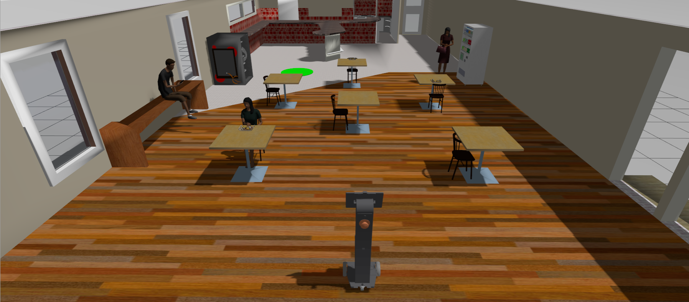

Tâche de Navigation¶
Description Générale¶
Un robot de service autonome opérant dans un stade doit être capable d’effectuer de nombreuses fonctions, dont la navigation autonome est l’une des plus fondamentales. Grâce à ses capteurs, le robot doit pouvoir percevoir son environnement afin de détecter les foules et les obstacles, planifier un itinéraire pour les contourner, suivre cette trajectoire et s’adapter en fonction de l’évolution de la situation. Les équipes doivent développer une solution logicielle utilisant Nav2 qui guide le robot de sa position de départ à sa destination.
Instructions pour la tâche¶
Lancement de la tâche¶
Dans un nouveau terminal, exécutez le fichier de lancement suivant pour lancer le robot dans Gazebo et RViz :
Vous devriez voir l’affichage ci-dessous dans Gazebo et RViz respectivement. Le robot est au centre et, en haut à gauche, le cercle vert représente la position cible.


Préparer votre Solution¶
-
Votre solution doit être préparée sous forme de packages ROS à enregistrer dans votre dossier de solutions. Créez un fichier exécutable de nœud dans votre package ROS qui exécute TOUT le code nécessaire à votre solution. Nommez ce fichier :
task_solution.py. -
Par conséquent, votre solution doit être exécutée en appelant les commandes suivantes :
Dans un terminal :
Note
Veuillez patienter jusqu’à ce que les modèles du monde et du robot soient générés. Ce processus peut prendre plus de temps que d’habitude, surtout lors de la première exécution du programme.
Dans un autre terminal:
Les fichiers de lancement peuvent également être utilisés dans votre solution.
Règles de Tâche¶
-
Le temps imparti pour accomplir la tâche est de 10 minutes (600 secondes).
-
La tâche est considérée comme terminée UNIQUEMENT lorsque n’importe quelle partie du robot se trouve à l’intérieur du cercle vert (marqueur de l’objectif).
Évaluation de l’autonomie¶
La notation de cette tâche sera basée sur les critères suivants :
| S/N | Critère/Métrique | Description |
|---|---|---|
| 1 | Évitement d’obstacles | Le robot doit éviter tout contact avec les obstacles. (Moins de contacts, c’est mieux) |
| 2 | Distance finale parcourue jusqu’à l’objectif | Distance la plus courte parcourue par le robot (mesurée depuis son centre) jusqu’à l’objectif, calculée à la fin du temps imparti [10 minutes]. (Plus la distance est courte, mieux c’est) |
| 3 | Durée d’exécution | Temps écoulé entre le lancement de la solution et la fin de la tâche. (Plus la durée est courte, mieux c’est) |